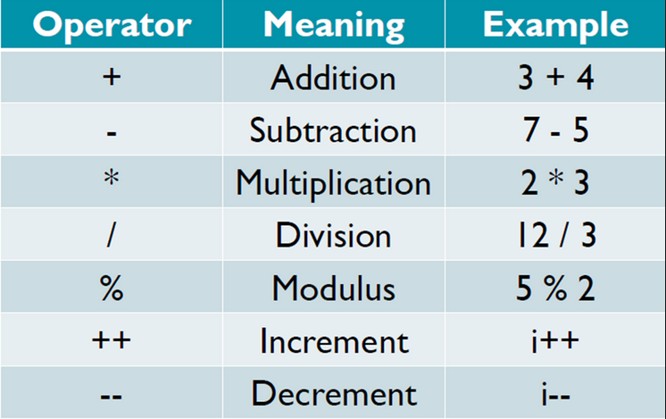
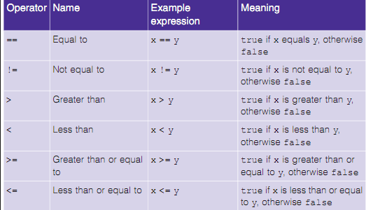
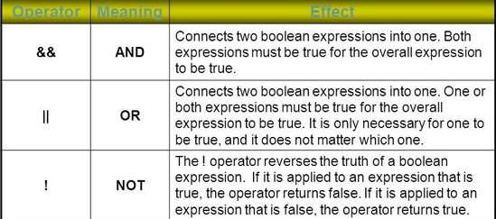
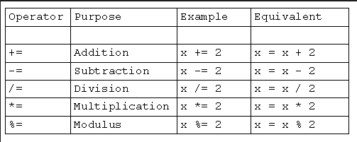

Operators
Operators are special symbols used in Java to perform certain actions on variables and values. There are 4 main types of operators in Java
- Arithmetic
- Logical
- Relational
- Assignment
Arithmetic Operators
These operators are used for mathematical operations as shown in the table below

12/3 = 4 (double)9/10 = 0.9 (double)(9/10) = 0 // Why? Because first 9 is divided by 10 which is 0.9 but type int discards numbers succeeding the decimal 12%5 = 2 // obtain remainer -5%2 = -1Precedence
() i.e. paranthesis (highest precedence)
*,/,%
+,- (lowest precedence)
Relational Operators
Relational operators are used to evaluate checking conditions and return boolean values.

boolean x = (2!=2); // return false boolean x = (3 == 3.0) // return true because in this case int is automatically promoted to double value y=(x>5)?10:20 // Special ternary operator which takes 3 arguments. It checks if x is greater than 5. If true then y=10 otherwise y=20Logical Operators
Like Relational operators, logical operators also return boolean values

if(x>3 && x<6) do something. // will only do something if x>3 and also x<6. Both conditions must be true if(height>180 || weight<150) do something // will only do something if height>180 or weight<150. Either condition must be true if(!found) do something // will only do something if the value of found is equal to falseAssignment Operators
Assignments operators are used to assign and manipulate values of variables

x=4; x+=4; // new value of x is 8 int a,b,c a=b=c=0; // assingnment form right to left i.e. first c is assigned to 0, then b=c (which is 0) and then a=b(which is 0) i++ // increment operator . same as writing i=i+1 i-- // decrement operator . same as writing i=i-1